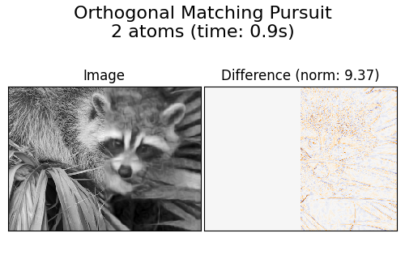

Note
Go to the end to download the full example code or to run this example in your browser via Binder
Image denoising using dictionary learning¶
An example comparing the effect of reconstructing noisy fragments of a raccoon face image using firstly online Dictionary Learning and various transform methods.
The dictionary is fitted on the distorted left half of the image, and subsequently used to reconstruct the right half. Note that even better performance could be achieved by fitting to an undistorted (i.e. noiseless) image, but here we start from the assumption that it is not available.
A common practice for evaluating the results of image denoising is by looking at the difference between the reconstruction and the original image. If the reconstruction is perfect this will look like Gaussian noise.
It can be seen from the plots that the results of Orthogonal Matching Pursuit (OMP) with two non-zero coefficients is a bit less biased than when keeping only one (the edges look less prominent). It is in addition closer from the ground truth in Frobenius norm.
The result of Least Angle Regression is much more strongly biased: the difference is reminiscent of the local intensity value of the original image.
Thresholding is clearly not useful for denoising, but it is here to show that it can produce a suggestive output with very high speed, and thus be useful for other tasks such as object classification, where performance is not necessarily related to visualisation.
Generate distorted image¶
import numpy as np
try: # Scipy >= 1.10
from scipy.datasets import face
except ImportError:
from scipy.misc import face
raccoon_face = face(gray=True)
# Convert from uint8 representation with values between 0 and 255 to
# a floating point representation with values between 0 and 1.
raccoon_face = raccoon_face / 255.0
# downsample for higher speed
raccoon_face = (
raccoon_face[::4, ::4]
+ raccoon_face[1::4, ::4]
+ raccoon_face[::4, 1::4]
+ raccoon_face[1::4, 1::4]
)
raccoon_face /= 4.0
height, width = raccoon_face.shape
# Distort the right half of the image
print("Distorting image...")
distorted = raccoon_face.copy()
distorted[:, width // 2 :] += 0.075 * np.random.randn(height, width // 2)
Distorting image...
Display the distorted image¶
import matplotlib.pyplot as plt
def show_with_diff(image, reference, title):
"""Helper function to display denoising"""
plt.figure(figsize=(5, 3.3))
plt.subplot(1, 2, 1)
plt.title("Image")
plt.imshow(image, vmin=0, vmax=1, cmap=plt.cm.gray, interpolation="nearest")
plt.xticks(())
plt.yticks(())
plt.subplot(1, 2, 2)
difference = image - reference
plt.title("Difference (norm: %.2f)" % np.sqrt(np.sum(difference**2)))
plt.imshow(
difference, vmin=-0.5, vmax=0.5, cmap=plt.cm.PuOr, interpolation="nearest"
)
plt.xticks(())
plt.yticks(())
plt.suptitle(title, size=16)
plt.subplots_adjust(0.02, 0.02, 0.98, 0.79, 0.02, 0.2)
show_with_diff(distorted, raccoon_face, "Distorted image")
Extract reference patches¶
from time import time
from sklearn.feature_extraction.image import extract_patches_2d
# Extract all reference patches from the left half of the image
print("Extracting reference patches...")
t0 = time()
patch_size = (7, 7)
data = extract_patches_2d(distorted[:, : width // 2], patch_size)
data = data.reshape(data.shape[0], -1)
data -= np.mean(data, axis=0)
data /= np.std(data, axis=0)
print(f"{data.shape[0]} patches extracted in %.2fs." % (time() - t0))
Extracting reference patches...
22692 patches extracted in 0.01s.
Learn the dictionary from reference patches¶
from sklearn.decomposition import MiniBatchDictionaryLearning
print("Learning the dictionary...")
t0 = time()
dico = MiniBatchDictionaryLearning(
# increase to 300 for higher quality results at the cost of slower
# training times.
n_components=50,
batch_size=200,
alpha=1.0,
max_iter=10,
)
V = dico.fit(data).components_
dt = time() - t0
print(f"{dico.n_iter_} iterations / {dico.n_steps_} steps in {dt:.2f}.")
plt.figure(figsize=(4.2, 4))
for i, comp in enumerate(V[:100]):
plt.subplot(10, 10, i + 1)
plt.imshow(comp.reshape(patch_size), cmap=plt.cm.gray_r, interpolation="nearest")
plt.xticks(())
plt.yticks(())
plt.suptitle(
"Dictionary learned from face patches\n"
+ "Train time %.1fs on %d patches" % (dt, len(data)),
fontsize=16,
)
plt.subplots_adjust(0.08, 0.02, 0.92, 0.85, 0.08, 0.23)
Learning the dictionary...
2.0 iterations / 125 steps in 14.59.
Extract noisy patches and reconstruct them using the dictionary¶
from sklearn.feature_extraction.image import reconstruct_from_patches_2d
print("Extracting noisy patches... ")
t0 = time()
data = extract_patches_2d(distorted[:, width // 2 :], patch_size)
data = data.reshape(data.shape[0], -1)
intercept = np.mean(data, axis=0)
data -= intercept
print("done in %.2fs." % (time() - t0))
transform_algorithms = [
("Orthogonal Matching Pursuit\n1 atom", "omp", {"transform_n_nonzero_coefs": 1}),
("Orthogonal Matching Pursuit\n2 atoms", "omp", {"transform_n_nonzero_coefs": 2}),
("Least-angle regression\n4 atoms", "lars", {"transform_n_nonzero_coefs": 4}),
("Thresholding\n alpha=0.1", "threshold", {"transform_alpha": 0.1}),
]
reconstructions = {}
for title, transform_algorithm, kwargs in transform_algorithms:
print(title + "...")
reconstructions[title] = raccoon_face.copy()
t0 = time()
dico.set_params(transform_algorithm=transform_algorithm, **kwargs)
code = dico.transform(data)
patches = np.dot(code, V)
patches += intercept
patches = patches.reshape(len(data), *patch_size)
if transform_algorithm == "threshold":
patches -= patches.min()
patches /= patches.max()
reconstructions[title][:, width // 2 :] = reconstruct_from_patches_2d(
patches, (height, width // 2)
)
dt = time() - t0
print("done in %.2fs." % dt)
show_with_diff(reconstructions[title], raccoon_face, title + " (time: %.1fs)" % dt)
plt.show()
- 
Extracting noisy patches...
done in 0.00s.
Orthogonal Matching Pursuit
1 atom...
done in 0.45s.
Orthogonal Matching Pursuit
2 atoms...
done in 0.87s.
Least-angle regression
4 atoms...
done in 6.97s.
Thresholding
alpha=0.1...
done in 0.09s.
Total running time of the script: (0 minutes 23.801 seconds)